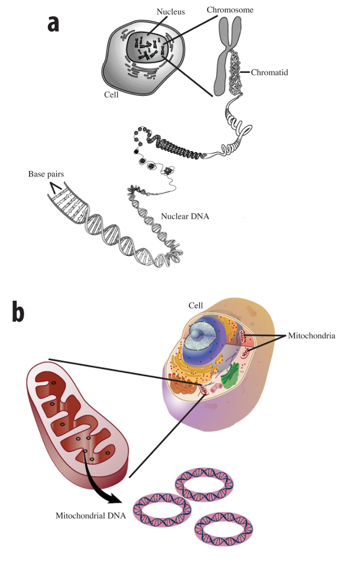

Some similarities between the DNA in the mitochondria and nucleus include the following:
Some differences between the DNA in the mitochondria and nucleus include the following:
How Mitochondrial DNA is Used
When forensic cases arise with insufficient biological evidence for nuclear DNA analysis, mtDNA analysis may be used. Mitochondrial DNA analysis can be completed using small samples such a hair shaft 0.5 cm in length, fragments of bone, or even a single tooth. A match of the mtDNA pattern from one individual with the mtDNA of another individual can prove either their identity or that the two individuals are related.
Mitochondrial DNA print analysis is often used by forensic scientists to identify unrecognizable human remains from plane crashes, car crashes where the vehicle has burned, murder cases where the victim has been burned or buried for a long time, or bodies thought to be soldiers missing-in-action. Mitochondrial DNA print analysis is also used in cases where the maternity of adopted children or missing children is in question.
A criminal case where mtDNA print analyis may not be useful is one in which two or more maternal relatives (that is, two siblings) are suspects. Maternal family members have identical mtDNA. Due to the increasing demand of mtDNA forensic analysis by police agencies, the FBI in 2003 began operating four separate DNA profiling laboratories across the USA solely dedicated to analyzing mtDNA samples from crime scenes.
The first criminal case in history to be solved using mtDNA was the murder and sexual assault of a four year-old girl in Tennessee, U.S.A., in September, 1996. Forensic DNA analysis experts from the FBI performed mtDNA testing on foreign hairs recovered from the girl's throat and her bedsheets; they matched mtDNA samples from the defendant. A jury convicted the defendant and sentenced him to life in prison with no parole.
Source: American Prosecutors Research Institute
Mitochondrial DNA analysis was used to clear a man convicted of a 1981 murder in Oklahoma, U.S.A.. Analysis of the mtDNA in a hair shaft found in a gag stuffed in the victim's mouth proved that the hair did not belong to the convicted man as was originally thought.
Source: CNN (November 3, 2003)